| --> | Simple Working Scientific Plots Using WxMaxima |
WxMaxima has plot2d and wxplot2d functions for plotting mathematical
objects. We will first investigate wxplot2d capabilities.
For
any function it is very useful to assess general behaviors.
We
will begin with the most general way to plot any function.
| --> | wxplot2d( [sin(x)],[x,−6,6] ); |
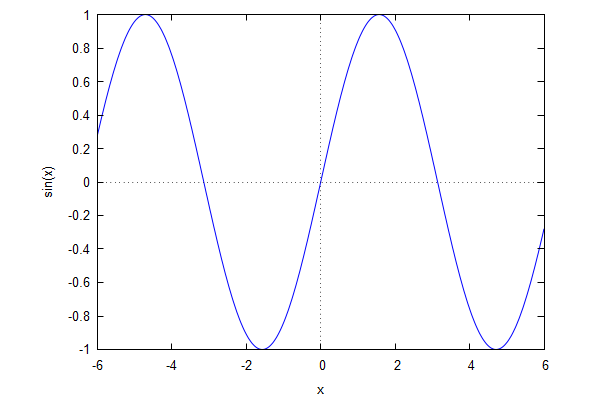
We can also define the function previously and plot it afterwards.
| --> | f(x) = 1/x; |
| --> | wxplot2d( [1/x], [x,−0.1,0.1] ); |
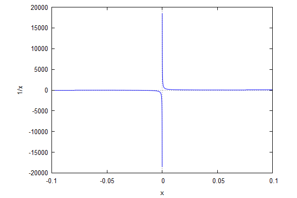
| --> | It's time to arrange y range, |
| --> | wxplot2d( [1/x], [x,−0.1,0.1],[y,−500,500] ); |
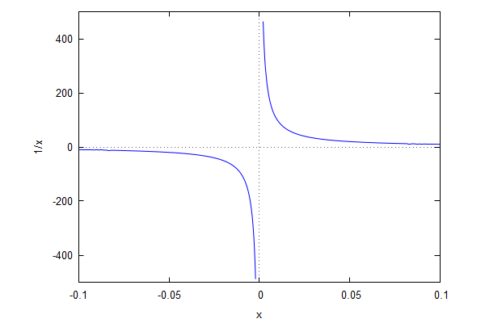
| --> | wxplot2d( [sin(x),cos(x)], [x,−5,5],[y,−1.2,1.2] ); |
To plot tan(x) in the same range with sin(x) and cos(x) we first plot
tan(x) and see the output.
| --> | wxplot2d( [tan(x)], [x,−6,6] ); |
We will arrange the range as to have something more descriptive.
| --> | wxplot2d( [sin(x),cos(x),tan(x)], [x,−10,10],[y,−1.2,1.2], [title,"Trigonometric Functions"], [xlabel,"x −−>"], [ylabel,"sin(x),cos(x),tan(x)"], [legend,"sin(x)","cos(x)","tan(x)"] ); |
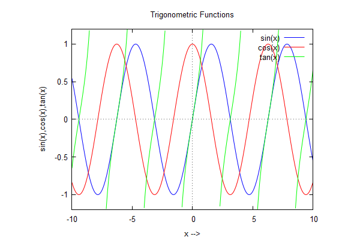
Graphing Parts of an Equation (http://www.scotchildress.com/wxmaxima/Plotting/Plotting.html)
lhs =left hand side, rhs=righand side.
| --> | E:x^2 −4·x = 5·x^5 + 3·x^2 + 7; |
| (%i12) | wxplot2d([rhs(E),lhs(E)], [x,−5,5], [y,−20,20], [title,"Two Sides of an Equation"], [xlabel,"x →"], [ylabel,"y →"], [legend,"Right Side","Left Side"])$ |
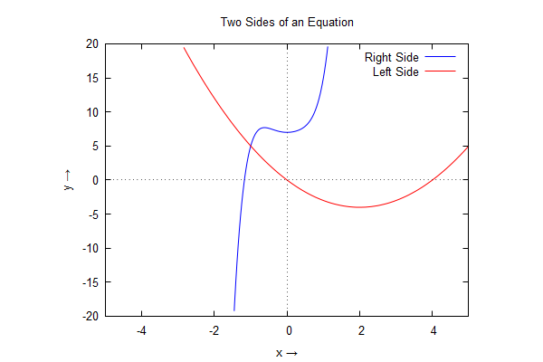
| (%i27) | draw2d( dimensions = [500,500], terminal='wxt, xrange=[−12,12], yrange = [−2,150], grid=true, color=red, xlabel="x →", ylabel="y →", title="Algebraic 2D Graphs", key="x^2−2x+30", explicit(x^2−2·x+30,x,−12,12), label(["Polygraph",5,120]), label_alignment='right, label(["Assemblement",8,110]), color=blue, key="x^2", explicit(x^2,x,−12,12) )$; |
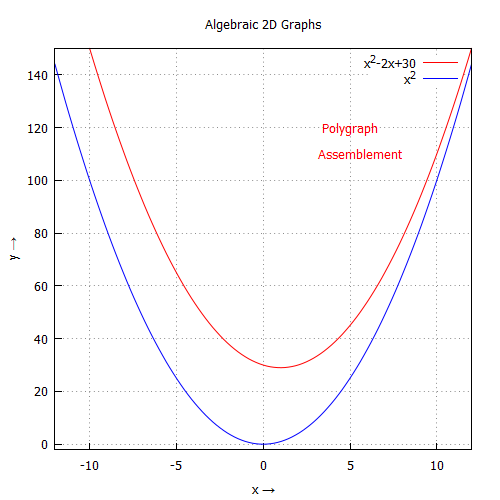
| --> | draw2d(xrange
= [0,10], yrange = [0,10], point_size = 3, point_type = diamant, points([[1,1],[5,1],[9,1]]), point_type = filled_down_triangle, points([[1,2],[5,2],[9,2]]), point_type = asterisk, points([[1,3],[5,3],[9,3]]), point_type = filled_diamant, points([[1,4],[5,4],[9,4]]), point_type = 5, points([[1,5],[5,5],[9,5]]), point_type = 6, points([[1,6],[5,6],[9,6]]), point_type = filled_circle, points([[1,7],[5,7],[9,7]]), point_type = 8, points([[1,8],[5,8],[9,8]]), point_type = filled_diamant, points([[1,9],[5,9],[9,9]]) )$ |
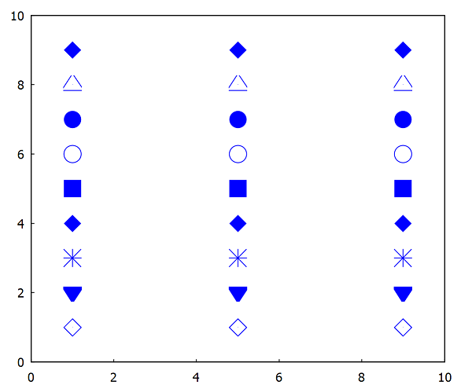
| --> | draw2d(xrange
= [0,10], yrange = [0,10], point_size = 3, point_type = diamant, points([[1,1],[5,1],[9,1]]))$ |
| (%i1) | draw2d(xrange
= [0,10], yrange = [0,10], point_size = 1, color=red, point_type = 6, points([[1,1],[5,2],[9,3]]))$ |
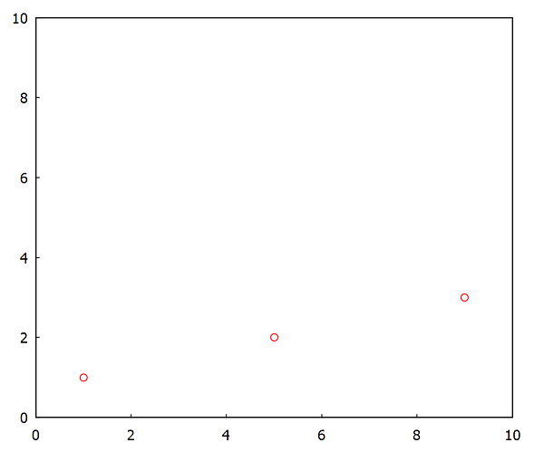
| (%i3) | draw2d(xrange
= [0,10], yrange = [0,10], point_size = 1, color=red, point_type = 5, points([[1,1],[5,2],[9,3]]))$ |
| --> |
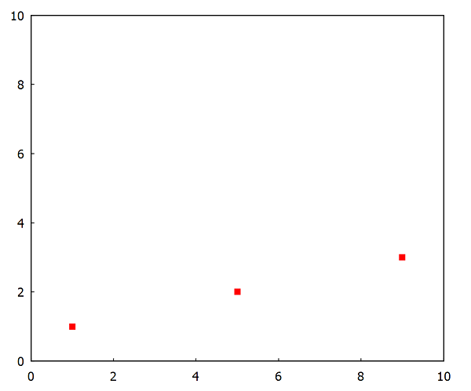
| (%i4) | draw2d(xrange
= [0,10], yrange = [0,10], point_size = 1, color=red, point_type = 4, points([[1,1],[5,2],[9,3]]))$ |
| --> |
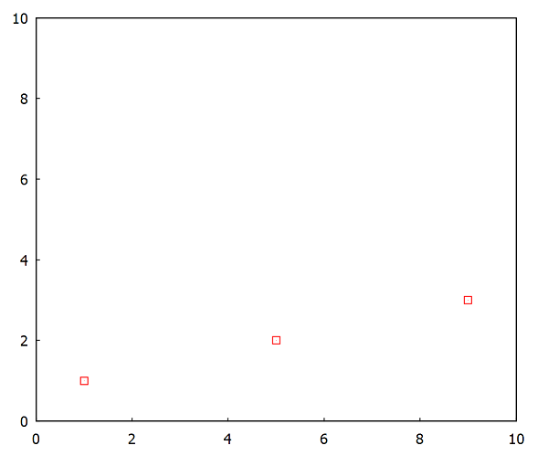
| (%i5) | draw2d(xrange
= [0,10], yrange = [0,10], point_size = 1, color=red, point_type = 3, points([[1,1],[5,2],[9,3]]))$ |
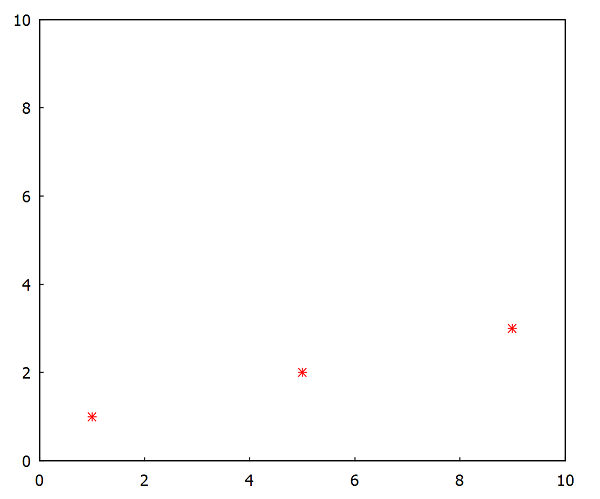
| (%i6) | draw2d(xrange
= [0,10], yrange = [0,10], point_size = 1, color=red, point_type = 2, points([[1,1],[5,2],[9,3]]))$ |
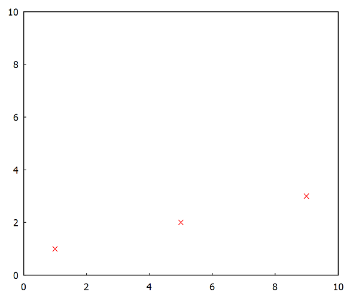
| (%i7) | draw2d(xrange
= [0,10], yrange = [0,10], point_size = 1, color=red, point_type = 1, points([[1,1],[5,2],[9,3]]))$ |
| (%i31) | draw2d( dimensions = [500,500], terminal=wxt, proportional_axes = xy, xrange = [0.8,3.2], yrange = [0.8,3.2], point_size = 1, color=red, grid=true, title="Recursive Relation", xlabel="x→", ylabel = "y→", point_type = filled_circle, points([[1,1],[2,2],[3,3]]))$ |
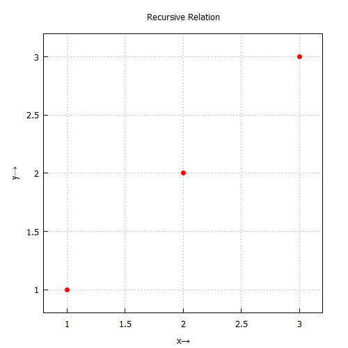
Some more useful controls from https://people.richland.edu/james/spring15/m122/projects/draw.html
Attention for disturbed show-ups !
| (%i26) | draw2d( grid = true, color = red, explicit(x^2,x,−2,2), color = blue, line_width = 2, implicit(x^2+y^2=4,x,−2,2,y,−2,2), color = forest_green ); |
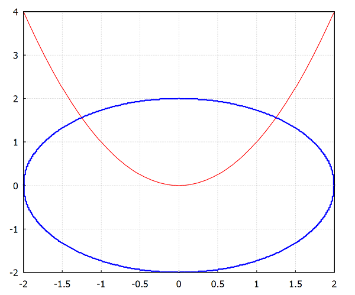
Use always squared plot dimensions for realistic plots!
| --> | draw2d( dimensions = [600,600], xrange = [−3,3], yrange = [−2,4], grid = true, color = red, explicit(x^2,x,−2,2), color = forest−green, line_width = 2, implicit(x^2+y^2=4,x,−2,2,y,−2,2) )$ |
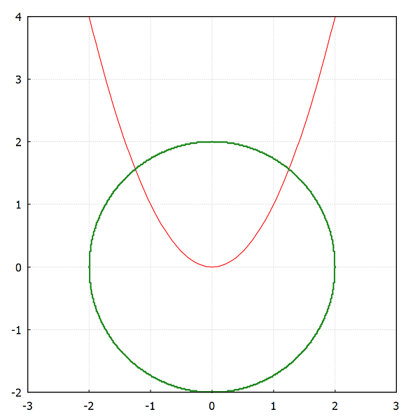
You may set draw defaults in case when drawing many similar graphs.
| (%i20) | set_draw_defaults( xaxis = true, xaxis_color = orange, xaxis_type = solid, xaxis_width = 1, xtics = 0.5, yaxis = true, yaxis_color = orange, yaxis_type = solid, yaxis_width = 1, ytics = 0.5, dimensions = [600,600], grid = true, nticks = 250, ip_grid = [100,100], font = Arial, font_size = 14, line_width = 3 )$ |
These graph defaults are valid unless altered. The image below, is plotted against previously defined draw defaults.
| (%i21) | draw2d( yrange = [−2,2], explicit(x·sin(x)^2,x,−2,2) )$ |
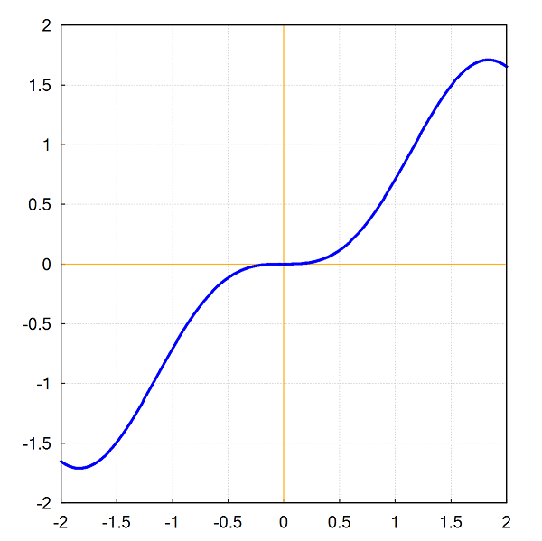
or use in one detailed graph
| (%i24) | draw2d( yrange = [−2,2], xaxis = true, xaxis_color = orange, xaxis_type = solid, xaxis_width = 1, xtics = 0.5, yaxis = true, yaxis_color = orange, yaxis_type = solid, yaxis_width = 1, ytics = 0.5, dimensions = [600,600], grid = true, nticks = 250, ip_grid = [100,100], font = Tahoma, font_size = 14, line_width = 2, explicit(x·sin(x)^2,x,−2,2) )$ |
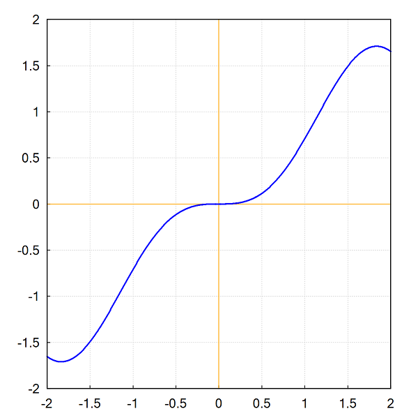
Some with more control elaborated from this site
| (%i74) | sx(x):=sin(x); |
| (%i73) | cx(x):=cos(x); |
| (%i10) | tx(x):=tan(x); |
| (%i11) | sx(x)^2+cx(x)^2; |
| (%i75) | load(draw)$ |
| (%i76) |
draw2d( yrange = [−1.2,1.2], title="sin(x)", xlabel="x→", ylabel = "sin(x) →", xaxis = true, terminal=wxt, xaxis_color = orange, xaxis_type = solid, xaxis_width = 1, xtics = 1·π, yaxis = true, yaxis_color = orange, yaxis_type = solid, yaxis_width = 1, ytics = 0.5, dimensions = [800,600], grid = true, nticks = 250, ip_grid = [100,100], font = Tahoma, font_size = 14, line_width = 2, key="sin(x)", explicit(sx(x),x,0,6·π) )$ |
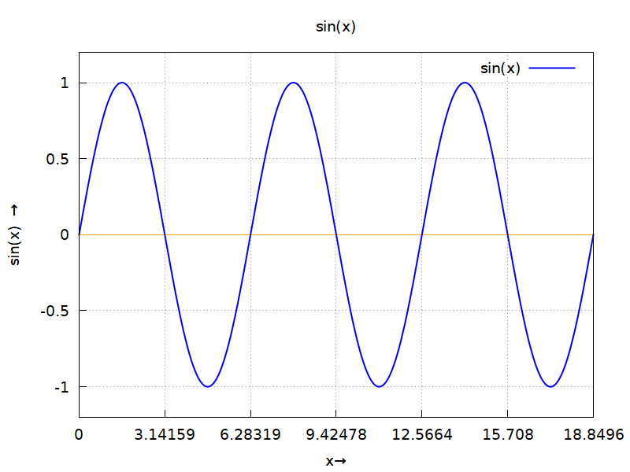
| (%i68) |
draw2d( yrange = [−1.2,1.2], title="cos(x)", xlabel="x→", ylabel = "cos(x) →", xaxis = true, terminal=wxt, xaxis_color = orange, xaxis_type = solid, xaxis_width = 1, xtics = 1·π, yaxis = true, yaxis_color = orange, yaxis_type = solid, yaxis_width = 1, ytics = 0.5, dimensions = [800,600], grid = true, nticks = 250, ip_grid = [100,100], font = Tahoma, font_size = 14, line_width = 2, key="cos(x)", color=red, explicit(cx(x),x,0,6·π) )$ |
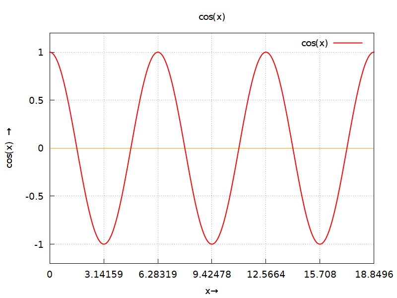
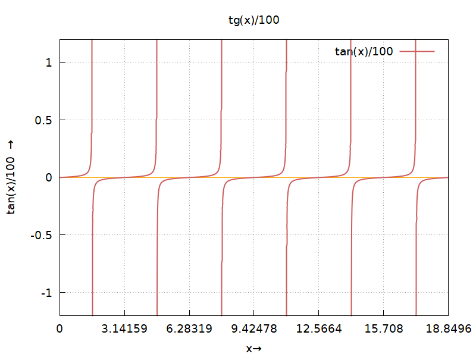
| (%i71) |
draw2d( yrange = [−1.2,1.2], title="sin(x) , cos(x) , tan(x)/100", xlabel="x→", ylabel = "sin(x) , cos(x) , tan(x)/100 →", xaxis = true, terminal=wxt, xaxis_color = orange, xaxis_type = solid, xaxis_width = 1, xtics = 1, yaxis = true, yaxis_color = orange, yaxis_type = solid, yaxis_width = 1, ytics = 0.5, dimensions = [600,600], grid = true, nticks = 250, ip_grid = [100,100], font = Tahoma, font_size = 14, line_width = 2, key="sin(x)", explicit(sx(x),x,−6,6), color=red, key="cos(x)", explicit(cx(x),x,−6,6), key="tan(x)/100", color=forest−green, explicit(tx(x)/100,x,−6,6) )$ |
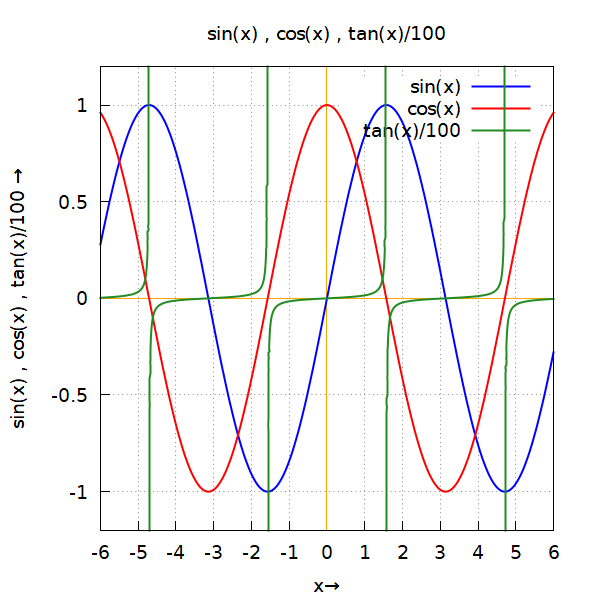
These plots are of introductory purpose and wxmaxima can capable a lot of more.Lot of publications with the same context, may be found and can be explorated. But the ones here, are proven for giving successful results and may serve for plotting similar curves with other options. Just install vwxmaxima and plot your curves by altering the plot statements given here.